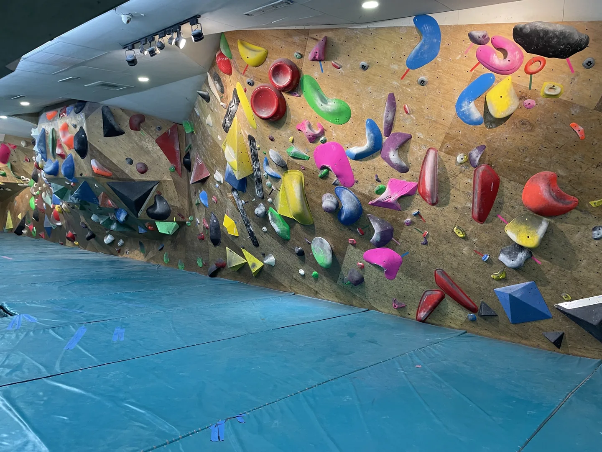

Daily Life | 自分との対話としてのクライミング
はじめに：
9割以上の時間は室内のボルダリングジムで、ほんの少しだけ室内のトップロープをして、屋外に行った（授業で）のは2回くらい……？ 自分の上達のなさが恥ずかしいのですが、いろいろなタイプのクライミングから影響を受けているので、タイトルはクライミングと呼ばせてください。
いまクライミングを始めて5年以上になります。2年ほど前に、クライミングを通して「自分は自分で、存在に正しいも間違いもなく、他人の基準の中で生きなくていい」と気づいたことを書きました。今回は、新しく感じたことをまた書き留めます。

安全に失敗を練習して、ゆっくり成長できる時間
ボルダリングを始めたのは、最初は楽しそうだと思っただけで、目標もありませんでした。
忙しい日々のなかで、いちばん満足できたのは、週に2回登って、少しずつ上達しつつ、ほかの趣味にも時間を残せる状態でした。でも、学業、仕事、コロナ、それから気をつけているのに順番にけがをする肩や膝、手首などのせいで、週に1回、月に1回しか登れない時期もありました。
「クライミングはストレス解消になって、尽きることのない達成感が得られる」……？
これは絶対に、最大の勘違いです！ 休まずに週2回、2か月続けると、「今回は前回より成長した！」という魔法のような瞬間が何度も来るかもしれません。でもまもなく、クライミングはほとんどの時間、「挫折と失敗」と「何度もやり直し」の間を行ったり来たりするものだとわかります。成長の曲線は、ずっと右肩上がり（↗）ではなく、波のように上がったり下がったり（〰️）して、予測できません。
こう聞くとひどい話で、人生の中の思い出したくない黒歴史や、登りきれないこと、トレーニング地獄と同じにしたくなるかもしれません。でも実際は、安全に失敗できて、無限に練習でき、デバッグして試行錯誤できる、すばらしい場なのです。上の人に成績をつけられるプレッシャーも、同僚どうしの競争や小細工も、仲間はずれや策略もなく、すべての気持ちを自分に向けられます。Voilà！ すばらしい！ しかも、まわりの人はみんな天使で、方法やコツを喜んで教えてくれ、あなたの勇気ある挑戦を大声で応援してくれ、完登すれば、ただただ一緒に喜んでくれます。
私はV3に登れるまでに1年半、V4に進むのにまた1年半かかりました。まわりには、1年でV4に届く人がたくさんいるので、それと比べれば、成長が遅いと言う資格は十分です。でも、進みがゆっくりでも、さぼっていたわけではありません。やることはたくさんあります。トップロープ、リード、テクニック、ルートを読むこと、足の置き場、筋力と持久力のトレーニング……呼吸を感じること、筋肉に血が集まること、重心の移動、指の腹の摩擦感。そして、もちろん、けがをしたときに正しく力を入れるための、からだのさまざまな知識も学びます。
ジムでいちばんよく聞く会話――
Ａ：「これは無理」
Ｂ：「いけるいける」
友人Lの壊滅的なけが(?)を戒めに（もっとも、Lさんはけがをしても登るのをやめませんが……）、私はずっとゆるく登ってきて（少なくとも、自分ではそのつもりで）、「グレード」を上げること自体にはこだわらず（上がったときはもちろん嬉しいけれど）、強くなるための大事な要素を分解して、ひとつずつ積み重ねてきました。今でも、ボルダリングの前には、10分のウォームアップと10分のトラバースを続けています。V0とV1はすべてきちんと登ります（このウォームアップのメニューは、まだ少しさぼっているかも……汗）。同じ課題に何回も挑まず（同じ部位を痛めつけるので）、「私はダメだから」の精神で、あらゆる冒険を断っています。そのせいでダイナミックな課題は驚くほど下手で、自分の能力を低く見積もっています。「これは本当に無理」な課題を、はやし立てられて試したら完登できたこともあって、とにかく、ときどきグレードがめちゃくちゃになり、一緒に登る岩仲間からは、大ぼら吹きだと思われています。
クライミングは鏡：勇気をもって見つめ返してもいいし、背を向けて避けてもいい
無数の挑戦のなかで、挑む対象はすべて自分に関わることです。自分の能力、恐怖、弱さ、体や心が認めたくないこと、越えられないこと。ここでは、勇気を出して試すこともできるし、あきらめることを選んでもかまいません。
私の「ゆるさ」が、問題を避けるための言い訳になっていることも、よくあります。たとえば、ダイナミックな課題を「けがが怖い」から避けているのは、実は、居心地のいい場所から踏み出して、新しいことや新しい感覚を学ぶことと、学ぶ過程で必ず味わう挫折が怖いのです。何度でも避けられるけれど、問題も何度でも現れます。いつか「今日は調子がよさそう」と思ったときに、もう一度勇気を出せばいいのです。遅すぎることは決してありません。
【システム表示】ダイナミックな課題に遭遇した。どうする？
▶たたかう
▶にげる
▶…また今度
クライミングをするなかで、こういう「勇気を出すこともできるし、避けることもできるし、今は避けて、あとで勇気を出したくなったときに出してもいい」というパターンに気づいてから、生活のなかのいろいろな衝突や思いどおりにいかないことにも、すなおに向き合えるようになりました。たとえば、自分の性格や価値観に反する振る舞いを求められたり、パートナーとなかなかうまく意思疎通できなかったりするとき、自分を調整して演技だと思う(?)ことも、ほかのコミュニケーションの技術を学んで対話を始めることもできるし、協力しない、妥協しないことも選べます。勇気を出して、「いやだ！ いやなものはいやだ！」と選ぶのです。
もしかしたらクライミングは、「今はできないことも、あとでまた出会う」ことを予告しているのかもしれません。でも同時に、「今はいやだ」という自分を受け入れなさい、選択に罪悪感を持つ必要はないし、まして自分を責める必要はない、と教えてくれています。
取り戻すのは体だけでなく、生き方も
壁でうまく動くため、そしてけがを避けるためには、直感だけで動けません。そのため、これまで無意識に使って当たり前のようにあった体が、注目の的になりました。体のひとつひとつの部位がどう働くかを感じ取る練習、恐怖と弱さの本質を見分けること、壁で手足をすべて使うこと。それらの過程は、私たちの動物性を取り戻すようなものです。
文明は、私たちを体から遠ざけ、自然からも遠ざけます。テクノロジーの力でどこにでも行けて、もう足で移動する必要もありません。温度がちょうどよくて安全な人工の建物の中にいれば、いろいろなことができます。人の暮らしは、あっさりと自然から切り離され（あるいは「いいと思う部分」だけ残され）、体は、ほとんどの場合、ぐるぐる回る労働だけが残されています。
体を取り戻すこの過程のおかげで、社会の大きな歯車のなかで、便利で効率のいい存在に単純化されていた私は、もう、「よりよい暮らしのために一生懸命働く」というクソみたいなシステムに賛同したくなくなりました。仕事のために健康を犠牲にして、永続的なダメージを受け、そのあと稼いだお金で病院にかかるのは、もう嫌です。プロのクライマーではありませんが、仕事が心身に与えるダメージが、クライミングのけがより大きいときは、立ち止まって考えなさいという合図です。（しかも、労働時間は1日の3分の1も占めているのです！）
ひとりの人間として、私はもっとよい自分と暮らしを持つべきだし、持つに値すると、そう思っています。
People were created to be loved, things were created to be used. The reason why the world is in chaos is because things are being loved, and people are being used.
「人間は愛されるために創られ、物は使われるために創られた。世界がこんなに混乱しているのは、私たちが物を愛して、人間を使っているからだ。」――空屋筆記-免費的自由（中国語）からの翻訳
（この文は、何度も引用されるうちに元の意味から少しずれているけれど、私はこのバージョンが好きです。）
選ぶということは、何を得て、何を失うかを決めること
指のタコは、2か月登らなければ柔らかく戻りますが、長い間クライミングシューズの中で丸まって厚くなったかかとや、変形した足の指は、ほとんど元に戻りません。少し前に、海外に行ったことと、コロナにかかったことで、4か月登れませんでした。足の指の関節のいつもどおりのタコと、生まれつきではない外反母趾を見て気づきました。「もし私が自分の体を神聖で侵されない存在だと思っているのに、足の指が変形して、体が何度もけがをしても続けたいのなら、クライミングはきっと、人生の大事な選択なんだ」と。時間もお金も労力も注いで、痛みと精神的な消耗に耐えて、生活のルールと大事なことの順番まで変えてしまいました。（精神的な消耗：たとえば、トップロープで登っているとき、ビレイしてくれている友人が、あなたが長いことテイクして上に進むのを許しても、下ろしてくれないとき、QQ）
選ぶことは、私にとってずっと難しいことでした。選び間違えたときのサンクコスト、もう選び直せなくて動けなくなること、自由を失うこと、妥協しなければならないことが怖いのに、自分が何を求めているのかはまだわかっていないので、試しては、ひとつずつ、いらないものを消していくしかありませんでした。年齢を重ねて、いまは、だんだん大胆に試せない段階に来ているようです。ルートのグレードが上がると、動きを調整できる余地がだんだん小さくなって、ほんの少しの違いで核心を越えられるかどうかが決まるのと同じように、いま、この瞬間の選択は、適当にごまかせないのだと気づきました。そのせいで、最近は前よりずっと慎重になってしまいました……
私にとっては大きな課題ですが、いろいろな経験が積み重なって、自分のことがよりわかってきたことで、方向や目標が、絶えず、はっきり絞られていくのも感じます。ただ、いつもこんなに自分に厳しくしているわけではなくて、「すべての道はローマに通ず」と思って、選びたくない投げやりな時間もあります。
少し前に、ピアノを弾く習慣を取り戻して、左手を見ないで正しいコードの位置に移動する練習をやり直しました。ボルダリングでダイナミックな動きを練習するのとよく似ています。左手がコードを変えるのを見るのは、足元を見つめて動くようなものです。上達したいなら、目で位置を確かめ、体で覚えなくてはなりません。ホールドとホールドの距離、足をどれだけ、どれくらいの高さに踏み出すかを考えて、繰り返し練習します。でも、ピアノで位置を間違えても不協和音が鳴るだけですが、ボルダリングのダイナミックな動きでは、足を踏み外したり、手をひねったりするかもしれません。恐怖とリスクは、同じレベルではありません！